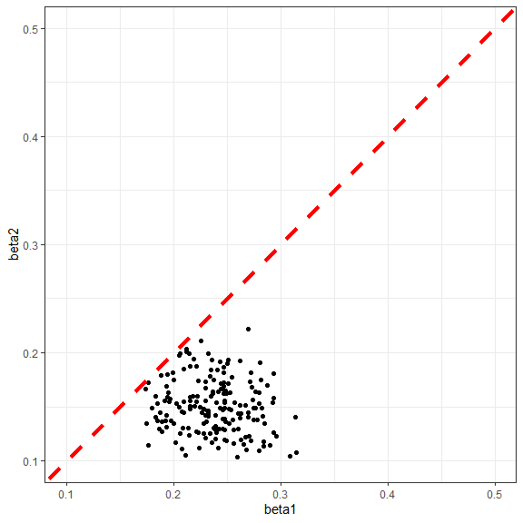
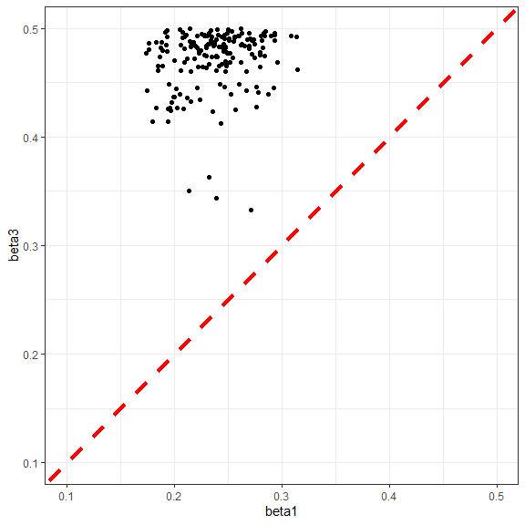

4 Proposing new points with custom implausibility
In this section we generate the set of points that will be used to train the second wave of emulators. To ensure that the relationship \(\beta_2<\beta_1<\beta_3\) is satisfied, we define a customised version of the implausibility measure.
custom_imp <- function(ems, points, targets, cutoff, n, ...) {
# Work out which points pass our restrictions beta2 < beta1 < beta3
simple_pass <- which(points$beta2 < points$beta1 &
points$beta1 < points$beta3)
# Set up an output vector
output <- rep(FALSE, nrow(points))
# In case all the points fail these cases return the output with all entries equal to FALSE
if (length(simple_pass) == 0) return(output)
# Otherwise, put the implausibility values in for the points that passed the earlier checks
output[simple_pass] <- nth_implausible(ems, points[simple_pass,], targets,
n = n, cutoff = cutoff, ...)
return(output)
}The custom_imp function returns the standard implausibility measure (see deterministic workshop) for parameter sets that satisfy the condition \(\beta_2<\beta_1<\beta_3\), and it returns FALSE otherwise.
To use this customised implausibility when calling the generate_new_design function, we simply need to set opts=list(accept_measure = custom_imp):
new_points <- generate_new_design(ems_wave1, 180, targets, verbose=TRUE,
opts=list(accept_measure = custom_imp))## Proposing from LHS...
## 84 initial valid points generated for I=4
## Performing line sampling...
## Line sampling generated 44 more points.
## Performing importance sampling...
## Importance sampling generated 62 more points.
## 46 initial valid points generated for I=3.3
## Performing line sampling...
## Line sampling generated 38 more points.
## Performing importance sampling...
## Importance sampling generated 110 more points.
## 113 initial valid points generated for I=3
## Performing line sampling...
## Line sampling generated 33 more points.
## Performing importance sampling...
## Importance sampling generated 121 more points.
## Selecting final points using maximin criterion...
## Resample 1
## Performing line sampling...
## Line sampling generated 30 more points.
## Performing importance sampling...
## Importance sampling generated 158 more points.
## Selecting final points using maximin criterion...Let us check the values of the three beta parameters for the newly generated parameter sets:
ggplot(new_points, aes(x = beta1, y = beta2)) + geom_point() +
xlim(0.1,0.5) + ylim(0.1,0.5) +
geom_abline(intercept = 0, slope = 1, color="red", linetype="dashed", linewidth=1.5) +
theme_bw()
ggplot(new_points, aes(x = beta1, y = beta3)) + geom_point() +
xlim(0.1,0.5) + ylim(0.1,0.5) +
geom_abline(intercept = 0, slope = 1, color="red", linetype="dashed", linewidth=1.5) +
theme_bw()
The plots clearly show that all non-implausible parameter sets at the end of the first wave satisfy the inequalities \(\beta_2<\beta_1<\beta_3\), which is what we wanted.
From here, the history matching process continues as usual (see deterministic workshop), with the only difference being that whenever the generate_new_design is called, the argument opts needs to be set to list(accept_measure = custom_imp).